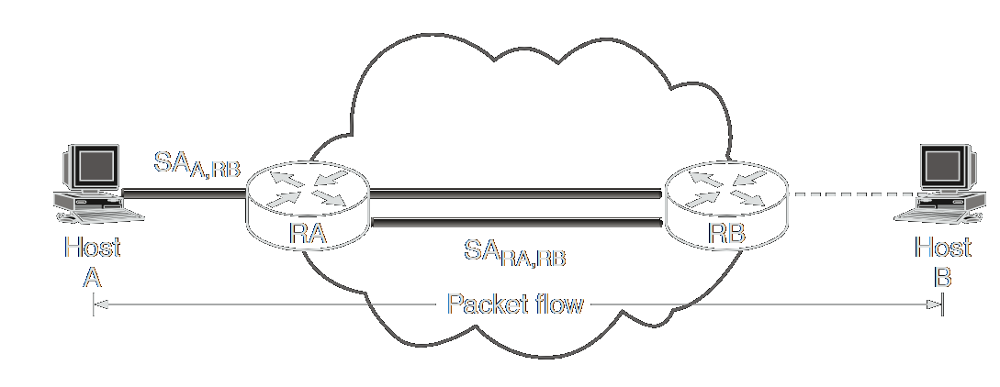

Modos de Operação
Após a arquitetura definir que um pacote deve ser protegido, a próxima pergunta é: como essa proteção será aplicada? O IPsec oferece duas respostas fundamentais para isso, conhecidas como modos de operação, que definem o escopo da proteção: modo transporte e modo túnel.
Há quatro combinações possíveis de modos e protocolos no IPsec:
- AH em modo transporte
- AH em modo túnel
- ESP em modo transporte
- ESP em modo túnel
Na prática, AH em modo túnel raramente é usado, pois protege essencialmente os mesmos dados que o AH em modo transporte.
IMPORTANTE: Os cabeçalhos AH e ESP não mudam entre os modos transporte e túnel.A diferença entre os modos é semântica, ou seja, o que está sendo protegido:
- No modo transporte, protege-se a carga útil (payload) do pacote IP original.
- No modo túnel, protege-se todo o pacote IP original, que é encapsulado dentro de um novo pacote IP.
As diretrizes para escolher o modo adequado e exemplos práticos de uso do IPsec em diferentes configurações são discutidos abaixo.
Modo Transporte
O Modo Transporte é o modo mais simples do IPsec. Seu objetivo é proteger o payload da camada de transporte, ou seja, os dados gerados por protocolos como TCP e UDP, sem alterar o cabeçalho IP original.
Neste modo, o IPsec atua como uma camada de segurança que intercepta os pacotes que fluem da camada de transporte para a camada de rede. Ele insere um cabeçalho IPsec (AH ou ESP) diretamente após o cabeçalho IP original e antes do cabeçalho de transporte, protegendo assim todo o conteúdo que vem depois dele.
Caso de Uso Principal: Segurança Fim-a-Fim
O Modo Transporte é utilizado exclusivamente quando a comunicação segura é desejada de ponta a ponta (fim-a-fim), ou seja, entre os dois hosts que estão efetivamente originando e consumindo os dados.
Por exemplo, considere dois hosts, A e B, que precisam trocar informações sensíveis diretamente pela internet. Eles podem configurar o IPsec em Modo Transporte para garantir que todo o tráfego TCP/UDP entre eles seja protegido.

A razão para essa limitação é que os roteadores na internet tomam suas decisões de roteamento com base no cabeçalho IP. Eles não devem (e geralmente não podem) inspecionar ou modificar o conteúdo que vem depois dele. O Modo Transporte, ao preservar o cabeçalho IP original, é perfeitamente compatível com o roteamento padrão da internet.
Estrutura do Pacote
Para visualizar o impacto do Modo Transporte, compare a estrutura de um pacote TCP/IP comum com a de um pacote protegido com IPsec:
Pacote TCP/IP Padrão:
Pacote Protegido com IPsec em Modo Transporte:
Como se pode ver, o cabeçalho IPsec é inserido para proteger o segmento TCP e os dados, enquanto o cabeçalho IP original permanece intacto e exposto.
Vantagens e Desvantagens
Modo Túnel
Enquanto o Modo Transporte protege o conteúdo, o Modo Túnel protege o contexto da comunicação. Seu objetivo é encapsular o pacote IP inteiro, tratando-o como um bloco de dados que será inserido dentro de um novo pacote IP.
Este modo é a base para a criação de Redes Privadas Virtuais (VPNs), pois é utilizado quando o ponto de terminação da segurança (onde o IPsec é aplicado) é diferente do destino final do pacote. Outra caso em que é usado é quando o roteador é quem provê IPsec ao contrário de um Host.
Estrutura do Pacote
Para visualizar o impacto do Modo Tunel, compare a estrutura de um pacote TCP/IP comum com a de um pacote protegido com IPsec:
Pacote TCP/IP Padrão:
Pacote Protegido com IPsec em Modo Tunel:
Como se pode ver, dessa vez o cabeçalho IPsec é inserido para proteger todo o datagrama original ao invés de apenas os dados (como é feito no modo transporte). E um novo cabeçalho IP encapsula o pacote IPsec para enviar à rede.
Caso de Uso Principal: VPNs Gateway-to-Gateway
O cenário mais comum para o Modo Túnel é a interconexão de duas redes privadas através da internet. Um dispositivo de segurança, como um roteador ou firewall em cada ponta, atua como um "gateway", provendo os serviços do IPsec em nome de todos os hosts da rede que ele protege.
Neste caso, o Host A envia um pacote normal para o Host B. O roteador RA intercepta esse pacote, o encapsula usando IPsec em Modo Túnel e o envia para RB. RB, ao receber, desencapsula o pacote e entrega o pacote IP original para o Host B.
Vantagens e Desvantagens
Nota sobre o uso Fim-a-Fim: Um host pode, tecnicamente, usar o Modo Túnel para se comunicar com outro host. No entanto, se os dois pontos da comunicação são os próprios hosts, o Modo Transporte é sempre preferível, pois oferece a proteção do payload com menos overhead, sem a necessidade do cabeçalho IP extra.
Nota sobre Túneis Aninhados: A arquitetura IPsec permite configurações avançadas, como a criação de "túneis aninhados" (um túnel dentro de outro, como um túnel AH dentro de um túnel ESP). No entanto, essas configurações são complexas, aumentam significativamente o overhead e são propensas a erros de roteamento, devendo ser usadas com cautela e apenas em cenários muito específicos.
Conclusão: Uma Decisão Arquitetural
A escolha entre o Modo Transporte e o Modo Túnel é uma das decisões mais fundamentais ao se projetar uma solução com IPsec. A decisão reflete diretamente o objetivo da proteção:
Agora que compreendemos os dois "envelopes" que o IPsec pode usar para transportar os dados, é hora de analisar em detalhe o que vai dentro desses envelopes. A próxima página mergulhará nos protocolos que aplicam a segurança: o Authentication Header (AH) e o Encapsulating Security Payload (ESP).